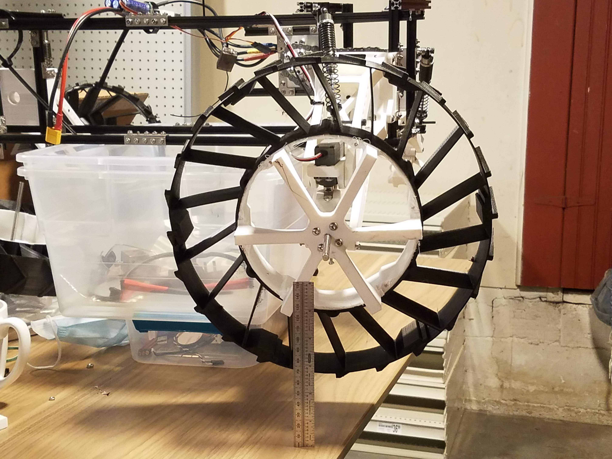

High Speed Mobile Robot
This is an (early stage) competitor in the Seattle Robotics Society's Robomagellan challenge. It involves driving around seattle center and touching as many traffic cones as possible. Whoever touches the most traffic cones in the shortest amount of time wins! (scoring is a little more complicated but that's the jist.)
Since speed is of the essence, I've been working on a rugged high speed mobile base. It will be all wheel drive and all wheel steering (since why not), and a little larger than a 1/5th scale RC car. It's only two-wheel drive and steering for now while I'm rapidly iterating, since printing four new components every time I make a change would take a lot longer than printing two.
Driving in circles. Rolling over was probably not good for the battery (taped right on top).
Please excuse the poor driving, filming at the same time is hard.
A close up of our 3d printed wheels (notice the 6 inch ruler for scale). The tires are too large to print at once, so they're 6 segments which fit together with dovetails.